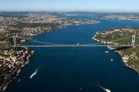

Sau vụ án Salacak, hai anh em chúng tôi chẳng bao giờ còn có dịp đi chơi thuyền cùng với mẹ nữa. Tuy nhiên, mùa đông trước đó, khi cả hai anh em bị bịnh ho, có một dạo, ngày nào chúng tôi cũng được mẹ cho đi chơi thuyền cùng với bà trên vịnh Bosphorus. Ông anh tôi ngã bịnh trước, và mười ngày sau, tới lượt tôi. Bịnh nhiều khi cũng sướng: Tôi được mẹ cưng chiều, săn sóc, kể những điều mà tôi thích nghe, cho đủ thứ đồ chơi tôi mê. Nhưng có một điều còn tệ hại hơn cả chuyện bị bịnh: đó là bị cách ly khỏi những bữa ăn gia đình, và thế là, nằm một xó khá xa bàn ăn mà lắng nghe tiếng chén muỗng leng keng, và không làm sao đoán ra được mọi người đang cười nói về những chuyện gì.

.
Khi những cơn sốt của chúng tôi bắt đầu, bác sĩ Alber (bất cứ thứ gì thuộc về ông đều làm cho chúng tôi khiếp sợ từ cái cặp cho tới bộ ria mép), đã khuyên mẹ tôi nên cho chúng tôi đi dạo trên vịnh Bosphorus, một lần mỗi ngày, để hưởng khí trời trong lành. Trong tiếng Thổ, Bosphorus còn có nghĩa là "cổ họng", và từ mùa đông năm đó, tôi luôn luôn gắn liền Bosphorus với khí trời trong lành. Hẳn là điều này có thể giải thích tại sao tôi không hề ngạc nhiên khi khám phá ra rằng, thành phố Tarabya nằm bên vịnh Bosphorus – khi xưa chỉ là một làng chài lưới Hy Lạp lúc nào cũng thiu thiu ngủ, giờ là một lối đi dạo nổi tiếng đầy nhũng quán ăn và khách sạn – lại được biết đến như là Therapia, khi nhà thơ Cavafy sống ở đó hồi còn là một đứa trẻ, một trăm năm trước đây[6].
Nếu thành phố lên sự thất bại, hủy diệt, tủi nhục, buồn bã, và nghèo nàn thì vịnh Bosphorus ngợi ca đời sống, lạc thú, và hạnh phúc. Istanbul chiết lấy sức mạnh của nó từ vịnh Bosphorus. Nhưng trước đây, chẳng ai thèm để ý đến điều quan trọng này. Họ nhìn con vịnh như một lối đường thủy, một khung cảnh đẹp, và trong hai trăm năm qua, một nơi chốn đẹp đẽ cho những tòa lâu đài mùa hè.
Qua bao thế kỷ, nơi đây chỉ là một chuỗi làng chài lưới Hy Lạp, nhưng từ đầu thế kỷ mười tám, giới tinh hoa quyền quý Ottoman bắt đầu cho xây dựng những biệt thự mùa hè của họ, hầu hết xung quanh khu Göksü, Küçüksu, Bebek, Kandilli, Rumelihisari, và Kanlica, từ đó mọc lên một nền văn hóa Ottoman, kín cổng cao tường, khép kín lại với bên ngoài, đặc biệt của riêng Istanbul, nhìn về thành phố này như là tận cùng trái đất, chẳng cần biết đến phần còn lại của thế giới. Các yali – dinh mười tám và mười chín – chào mừng thế kỷ hai mươi cùng với niềm hân hoan tuyệt vời bên bờ nước của những dòng họ lớn Ottoman trong thế kỷ tự hào của nền Cộng hòa và chủ nghĩa quốc gia Thổ như là những khuôn mẫu nói lên căn cước và kiến trúc Thổ– Ottoman. Nhưng các yali mà chúng ta nhìn thấy qua những bức hình trong Những hồi ức Bosphorus, được tái tạo trong những bức tranh của Melling, và phát ra tiếng vọng trong những yali của Sedad Hakki Eldem – những căn nhà lớn lao với các cửa sổ cao và hẹp, những rìa mái nhà rộng rãi những cửa sổ nhìn ra vịnh, những ống khói hẹp, chúng đúng là cái bóng còn lại của một nền văn hóa đã bị hủy diệt.
Vào thập niên 1950, tuyến xe buýt từ quảng trường Taksim tới Emirgân vẫn còn chạy qua khu Nişantaşi. Khi cùng mẹ đi xe buýt tới Bosphorus, chúng tôi có thể đứng đợi ngay bên ngoài nhà. Nếu dùng xe điện, trạm chót là Bebek, và từ đó, sau một chuyến cuốc bộ dài theo bờ vịnh, chúng tôi gặp người chủ thuyền, luôn đợi chúng tôi đúng lúc, đúng giờ, và trèo lên chiếc ghe của ông. Và cứ thế chúng tôi len lỏi giữa những thuyền, bè, ghe, mảng, những chiếc phà đi vòng quanh thành phố, những chiếc tàu nhỏ khảm vỏ trai, những ngọn hải đăng, và sau cùng, rời con nước tù túng của Bãi Bebek để gặp những dòng thủy lưu của con vịnh Bosphorus, nhấp nhô theo những đợt sóng khi con thuyền nhỏ gặp phải tàu lớn, tôi thầm nhủ, cầu sao cho những chuyến ra khơi như thế này chẳng bao giờ chấm dứt.
Sau khi đã đi qua khu trung tâm thành phố vừa lớn lao, vừa đầy những dấu tích lịch sử, vừa bê tha như Istanbul, rồi được cảm thấy sự tự do của biển cả rộng lớn – một chuyến ra khơi dọc theo con vịnh Bosphorus tuyệt vời như thế đấy. Được xô đẩy mãi về phía trước bởi những dòng nước mạnh, được hít hà thứ mùi biến thoáng đãng chẳng mang trong nó chút bụi, khói, và tiếng ồn của thành phố đông nghẹt người, kẻ du lịch bắt đầu cảm thấy, mặc cho mọi chuyện, đây vẫn là một nơi anh ta có thế thường thức sự cô đơn và tìm kiếm tự do. Lối đường thủy đi qua khu trung tâm thành phố này, xin đừng lầm nó với những con kênh ở Amsterdam, ở Venice, hay những con sông chia cắt Paris hay Rome thành hai: Những dòng nước mạnh chảy qua vịnh Bosphorus, trên mặt chúng là gió, là sóng, bên dưới chúng là vực thẳm, là bóng đen. Khi con nước đã ở phía sau bạn, và nếu đi theo lộ trình của phà thành phố bạn sẽ nhìn thấy những khu nhà và các yali, những bà mệnh phụ già từ bao lơn, vừa theo dõi bạn vừa nhấm nháp trà, những chòi uống cà phê với giàn cây leo ở bên cạnh bên tàu, những đứa trẻ mặc quần xà lỏn ùa xuống biển, ngay ở chỗ những miệng cống vừa nhả ra hết lượng nước trong chúng, và sau đó, phơi nắng trên nền xi măng, những người câu cá dọc theo bờ, những con người lười biếng uể oải trên những chiếc thuyền buồm, những học sinh ra khỏi trường đi tản bộ dọc bờ biến, những hành khách xe buýt đưa mắt nhìn biển qua kính cửa sổ những khi tắc đường, những con mèo rình mò những người câu cá trên cầu tàu, những hàng cây mà bạn chưa từng ngờ là cao đến như thế, những tòa biệt thự nằm ẩn giấu, những khu vườn có tường bao bọc mà bạn chẳng bao giờ nghĩ rằng có hiện hữu, những lối đi hẹp dẫn lên các ngọn đồi, những khu nhà thả bóng dài của chúng về phía khu đất phía sau, và cứ thế chầm chậm, xa xa, là thành phố Istanbul trong toàn bộ sự hỗn độn của nó – những thánh đường Hồi giáo, những khu phố nghèo, những cây cầu, những đỉnh, ngọn tháp, những khu vườn, những tòa nhà cao cứ theo nhau mà mọc mãi lên. Đi du lịch trên vịnh Bosphorus, hoặc bằng phà, bằng thuyền máy, hay bằng thuyền chèo, là để nhìn thành phố; từ ngôi nhà này qua ngôi nhà khác, từ khu xóm này qua khu xóm khóm khác, và cũng là nhìn, từ phía xa một bóng dáng, một ảo ảnh không ngừng biến đổi.
Điều tôi mê nhất trong những chuyến dã ngoại gia đình trên vịnh Bosphorus là được nhìn thấy những dấu vết ở mọi nơi của nền văn hóa huy hoàng ảnh hưởng Tây phương nhưng không mất đi cội nguồn và sức sống của nó. Đứng trước những chiếc cổng sắt nguy nga của một tòa yali, lặng câm sững sờ vì những chạm trổ của nó, nhận ra vẻ uy nghi của những bờ tường cao rêu phủ dày của một yali khác, trầm trồ trước những bức màn, những bậc thềm, những khung cửa bằng gỗ thật tinh xảo của một yali thứ ba còn huy hoàng hơn hai cái kia, chiêm ngưỡng đám cây judas[7] trên những ngọn đồi phía bên trên, đi qua những khu vườn rợp bóng cây xanh, những thứ cây có từ bao thế kỷ như loài thông, loài tiêu huyền – ngay cả một đứa trẻ cũng hiểu ra rằng, một nền văn minh lớn lao đã từng đứng sừng sững ở nơi đây, và, từ những gì chúng nói cho tôi biết, những con người chắc chắn chẳng khác gì chúng tôi nhiều nhặn, đã có một thời sống một cuộc đời rât ư khác biệt với cuộc đời của chúng tôi – chúng tôi càng cảm thấy mình nghèo nàn hơn, yếu đuối hơn và nhà quê hơn, so với họ.
Từ giữa thế kỷ mười chín trở đi, khi một chuỗi thất bại quân sự xói mòn để quốc, Cổ Thành tràn ngập di dân, và ngay cả những lâu đài hoàng cung vĩ đại nhất cũng bắt đầu cho thấy dấu hiệu của sự nghèo khổ, điêu tàn, thế là đám pasha, giới thế gia vọng tộc, đám thư lại mới nổi chạy theo Tây phương có thói quen thời thượng là đến trú ẩn trong những biệt thự mà họ cho xây dọc theo vịnh Bosphorus, chính ở nơi này họ toan tính tạo dựng một nền văn hóa mới, đóng cửa rút cầu đối với thế giới còn lại. Các nhà du lịch Tây phương không làm sao lọt vào xã hội đóng kín này; làm gì có những con đường với lại vỉa hè. Ngay cả khi xuất hiện những con phà vào giữa thế kỷ mười chín, vịnh Bosphorus cũng chẳng hề trở thành một phần của thành phố chính – và những cư dân Ottoman tự nhốt kín mình ở Bosphorus này chọn thái độ không bao giờ viết về cuộc sống của họ, chính vì vậy mà chúng ta chỉ còn trong cậy vào hồi ức đám con cháu của họ.
Xuất sắc nhất trong số những nhà viết hồi ức đó là Abdulhak Şinasi Hisar (1887-1963); cuốn Văn minh Bosphorus của ông được điểm xuyến bằng những câu văn dài, đượm mùi Proust mà ông rất thích đọc. Hisar, lớn lên tại một yali ở Rumeli Hisar, trải qua một phần đời trai trẻ của mình ở Paris, và đánh bạn với nhà thơ Yaliya Kemal (1884-1958), cùng với nhà thơ, ông nghiên cứu môn khoa học chính trị; trong Cảnh trăng trên vịnh Bosphorus và Các yali của Bosphorus, ông cố tái tạo dáng vẻ bí ẩn của nền văn hóa đã tan biên vào hư vô của mình, bằng cách "trau chuốt và làm việc với nó bằng tất cả sự trìu mến và thận trọng của một nghệ sĩ tiểu họa thời xa xưa."
Ông viết về những nghi lễ ban ngày và những cảnh thanh bình buổi đêm, khi cùng bạn bè tụ tập trên thuyền, ngắm trăng bạc nô đùa trên mặt nước, và thưởng thức tiếng nhạc từ một chiếc thuyền đâu đó, men theo làn nước tới với họ. Mỗi lần đọc Cảnh trăng trên vịnh Bosphorus là mỗi lần tôi buồn lạ lùng, tiếc là giá như mình có mặt tại đó, nhập vào những đam mê, nhập vào niềm im lặng, rồi tôi sướng mê tơi khi nghĩ đến chuyện làm sao mà nhà văn, bị nỗi hoài nhớ thúc bách đến trở nên mù lòa và cứ thế chìm xuống những dòng nước ngầm đen thui của cái thiên đàng đã mất của ông. Vào các đêm trăng, khi những lá thuyền tụ lại ở những khoanh biển yên tĩnh rồi tiếng nhạc tắt ngấm, ngay A. Ş. Hisar cũng cảm nhận ra điều này: "Những lúc không một hơi gió, làn nước, đôi khi, như một cơn chuyển mình từ bên trong, lao xao, khiến mặt nước óng ánh như mặt lụa."
Ngồi trên thuyền cùng với mẹ, tôi thấy như thế các màu sắc trên những ngọn đồi Bosphorus không phản chiểu thứ ánh sáng bên ngoài. Những cây judas và tiêu huyền, những cánh chim hải âu vỗ vùn vụt khi bay qua chúng tôi, những bờ tường đổ nát của các kho chứa ghe thuyền – tất cả như phản chiếu một thứ ánh sáng mờ nhạt từ bên trong. Ngay cả vào những ngày nóng nực nhất, khi những đứa trẻ con nhà nghèo nhảy từ con đường nơi bến tàu xuống mặt biển, mặt trời ở đây có vẻ như cũng không hoàn toàn làm chủ khí hậu và phong cảnh. Và tôi thật mê, mà vẫn cố cắt nghĩa, cái cảnh tượng vào lúc ráng chiều mùa hè rớt xuống, cũng là lúc Bosphorus trộn bầu trời đỏ rực vào với sự bí ẩn của riêng nó về bóng tối. Tôi mê màu nước thay đổi khi nó chuyển mình như được bứt ra khỏi sự cầm giữ, và sủi bọt sùng sục, càng trở nên hung hãn khi bị những con thuyền cắt ngang. Nhưng ngay ở bên dưới mớ bọt biển kia, là phần biển mềm mại hơn, màu sắc của nó không thay đổi gì nhiều, nhấp nha nhấp nhô, giống như ao hoa súng trong tranh Monet.
Vào giữa thập niên 1960, trong khi học tại Học viện Robert, tôi dành khá nhiều thì giờ đứng giữa đám người đợi xe buýt buổi sáng tại Beşiktaş-Sariyer, nhìn lên những ngọn đồi phía bờ biển Á châu, trong lúc Bosphorus chập chờn như một biển cả bí mật, thay đổi màu sắc cùng với mặt trời lên. Vào những buổi chiều xuân sương mù, khi không một cọng lá nào ở trong thành phố rì rào lao xao, vào những đêm hè không một cánh gió, không một tiếng động, khi một người đàn ông lặng lẽ bước một mình sau nửa đêm dọc theo bờ biển Bosphorus, anh ta chỉ nghe tiếng bước chân của chính mình, và khi anh ta đi đến Akinti Burnu, cái mũi đất ngay quá Arnavutköy, hay tới ngọn hải đăng ở chân nghĩa trang Aşiyan, đúng lúc đó, anh sẽ nghe thấy tiếng gầm thật hạnh phúc, thật đáng sợ và thật sung mãn của con nước, và gật gà gật gù, những đợt khói sóng, mớ bọt biển kia, chẳng biết đến từ nơi nào, và tự hỏi, như A. Ş. Hisar đã từng, và tôi cũng đã từng tự hỏi, liệu chăng Bosphorus có một linh hồn.
Tôi nói về màu của những cây bách, của những khu rừng âm u ở những nếp gấp của các thung lũng, của những yali hoang phế; trống rỗng, bị con người bỏ bê. Tôi nói về chất thơ của những con tàu và những yali của Bosphorus mà chỉ những ai đã từng tiêu tán hết cuộc đời của họ ở hai bên bờ biển thì mới hiểu được; tôi nói về sự khám phá ra niềm vui của cuộc sống trong những điêu tàn đổ nát của một nền văn minh khi nó đã đạt tới một cung cách rất ư là đặc thù, tôi nói về tính chất không làm sao quyết đinh của những đau khổ, những niềm vui và những kinh nghiệm của điều mà người ta gọi là cuộc đời, ở một nhà văn năm chục tuổi với niềm khát khao được hạnh phúc, được vui thích như là một đứa trẻ con coi Lịch sử và các nền văn hóa chẳng là cái thá gì, với niềm khao khát hiểu biết cuộc đời bằng sự chân thành. Tuy nhiên, ngay khi tôi bắt đầu gợi ra vẻ đẹp và thi ca Bosphorus, của những con phố âm u Istanbul, một giọng nói ở trong tôi đã cảnh báo đừng có cường điệu những vẻ đẹp của thành phố nơi tôi sống, như thể nó muốn tôi giấu giếm ngay cả với chính tôi cái bất toàn của cuộc đời mà tôi sống, có lẽ là một điều bị gây nên bởi sự thiếu vắng cái đẹp ở trong chính cuộc đời của tôi. Nếu tôi thấy thành phố đẹp và mê hoặc, thì cuộc đời của tôi bắt buộc cũng phải như vậy. Rất nhiều nhà văn của các thế hệ trước tôi rơi vào thói quen ấy khi viết về Istanbul: Ngay cả khi họ xuýt xoa, hít hà vẻ đẹp của thành phố khiến tôi mê mẩn với những câu chuyện của họ, thì rốt cuộc tôi cũng hiểu ra rằng họ đâu có còn sống ở cái nơi mà họ miêu tả, và họ thèm muốn những tiện nghi hiện đại của các đô thị Tây phương hơn nhiều. Từ những bậc đàn anh này, tôi hiểu ra rằng, một khi có kẻ ngợi ca vẻ đẹp của Istanbul, thì điều đó có nghĩa kẻ này đã không còn ở thành phố từ đời nào rồi, và không phải là không có chút mặc cảm tội lỗi: bởi tay nhà văn nào cứ nói về những điêu tàn, về nỗi buồn của thành phố có khi nào chịu thắc mắc về thứ ánh sáng ma quỷ chiếu xuống cuộc đời của anh ta đâu. Với tới được những vẻ đẹp của thành phố và Bosphorus cũng có nghĩa phải luôn luôn nhớ rằng có một sự khác biệt rất lớn lao giữa cuộc đời thảm hại của riêng một con người và những vinh quang huy hoàng của quá khứ.
Những cuộc du ngoạn bằng thuyền với mẹ tôi luôn kết thúc như nhau. Sau khi thuyền chúng tôi, một hoặc hai lần, đụng phải những dòng nước nguy hiểm, và bị chao đảo vài lần bởi những đợt sóng mạnh mỗi khi gặp những con tàu lớn, người chèo thuyền sẽ cho ghé nó tại chân đường Aşiyan, ngay trước mũi Rumeli Hisar, đây cũng là nơi những dòng nước tụ lại. Mấy mẹ con sẽ đi bộ tới mũi đất, đây là điểm nhỏ hẹp nhất của Bosphorus, rồi hai anh em tôi sẽ đùa nghịch với mấy khẩu đại bác mà Mehmet Nhà Chinh phục đã sử dụng trong lần vây hãm thành phố, giờ chúng được trưng bày ngay bên ngoài những bức tường của tòa lâu đài. Ngó vô bên trong những nòng súng khổng lồ, nơi mấy người say sưa nghiện ngập, những người không nhà cửa dùng làm chỗ ngủ đêm – đầy những rác rưởi, chai, ly vỡ, những chiếc lon đựng nước bị bóp dẹt, những mẩu thuốc lá – chúng tôi không thể không ngao ngán cảm thấy rằng cái di sản lịch sử lớn lao của Istanbul và Bosphorus đã biến thành một điều gì tăm tối, bí hiếm, không làm sao hiểu nổi, ít nhất là đối với những con người đã sinh sống ăn ngủ ở bên trong những nòng súng khổng lồ này.
Khi chúng tôi tới bến phà Rumeli Hisar, mẹ tôi sẽ chỉ một con đường rải sỏi, một quãng vỉa hè của nó, nay có một quán cà phê nhỏ, và nói, “Chỗ đó, ngày xưa là một yali bằng gỗ.” Và bà nói thêm, “Khi mẹ còn nhỏ, ông của các con thường đưa mấy anh chị em mẹ tới đây, vào mùa hè.” Căn nhà mùa hè này, trong trí tưởng tượng của tôi, mới cổ lỗ, đáng sợ, và điêu tàn đổ nát làm sao, luôn gắn liền với một câu chuyện đâu tiên mà tôi nghe được về nó: Chủ nhân, cô con gái của một pasha, sống tại tầng trệt đất của căn nhà, đã bị sát hại bởi mấy tên ăn trộm, trong những hoàn cảnh thật là bí hiểm, cùng quãng thời gian mẹ tôi đã trải qua những mùa hè tại đây, hồi giữa thập niên 1930. Thấy tôi quá xúc động vì câu chuyện u ám, mẹ tôi bèn lái sự quan tâm của tôi qua những điêu tàn đổ nát của căn nhà dùng làm nơi chứa ghe thuyền của ngôi biệt thự đã biến mất và chuyển qua một câu chuyện khác; với một nụ cười buồn bã, bà nhắc lại lần mà ông tôi, quá bực bội với cái niêu chuyên dùng để ninh món mướp tây của bà tôi, ông vốn không ưa món này, trong một con giận dữ bất thần, đã ném nó qua cửa sổ xuống dòng nước sâu và luôn luôn chuyển động của vịnh Bosphorus.
Còn một yali khác, ở İstinye, nhìn xuống khu chứa thuyền bè, một bà con xa của chúng tôi ở đó, và mẹ tôi thường lui tới, những lần muốn xa lánh cha tôi; nhưng tôi nhớ sau này nó cũng điêu tàn đổ nát. Trong thời thơ ấu của tôi, giới nhà giàu mới nổi dần dần trở thành tầng lớp trưởng giả, họ không thèm để ý đến các biệt thự Bosphorus nữa. Những biệt thự cổ lỗ này chẳng làm sao chống đỡ nổi với gió bắc, và cái giá lạnh của mùa đông; đứng chênh vênh ở ngay nơi bờ vực nước, thật khó và cũng thật tốn kém khi cần sưởi ấm chúng. Bởi vì tầng lớp giàu có thời kỳ Cộng hòa thì không có quyền lực như là những pasha của thời để chế Ottoman, và bởi vì họ cảm thấy có vẻ Tây phương hơn khi ngồi ở trong những căn hộ tại các khu dân cư xung quanh Taskim, nhìn vịnh Bosphorus từ phía xa, nên những gia đình Ottoman cổ xưa bây giờ trở nên suy yếu và kém cạnh – đám con cái của các pasha rơi vào nghèo đói, những bà con của các nhân vật như A. Ş. Hisar – không làm sao kiếm ra người để bán lại các yali Bosphorus già nua. Và thế là suốt thời thơ ấu của tôi, tới những năm bảy mươi, khi thành phố bành trướng, hầu hết yali và biệt thự, hoặc vướng vào những vụ kiện tụng, tranh chấp gia tài, giữa đám cháu của các pasha, và những người đàn bà hậu cung điên khùng, những người sống ở trong những tòa nhà đó, hoặc bị chia năm xẻ bảy, thành những căn hộ hay thậm chí phòng đơn cho thuê; và tường nhà cứ thế tróc lở, giá lạnh và ẩm ướt cứ thế gặm nhấm, xói mòn, làm đen thui màu gỗ, ngoài ra lại còn những yếu tố vô danh, có lẽ vì niềm hy vọng sẽ xây dựng một ngôi nhà hiện đại, thiêu rụi chúng đi.
Vào cuối thập niên 1950, đối với chúng tôi, Chủ nhật sẽ không phải là Chủ nhật nếu không được ra khỏi nhà, dự những chuyến dã ngoại buổi sáng tới Bosphorus, trên chiếc xe 1952 Dodge của gia đình do cha hoặc chú lái. Những dấu vết của nền văn hóa Ottoman đang biến mất, cho dù đáng tưởng niệm cỡ nào, chẳng gây chút thiệt hại gì cho chúng tôi; nói cho cùng, chúng tôi thuộc vào tầng lớp mới giàu của thời Cộng hòa, và như vậy, những dấu vết cuối cùng của văn minh Bosphorus của A. Ş. Hisar thực ra lại là một sự đảm bảo. Chúng tôi cảm thấy được an ủi, thậm chí là kiêu hãnh vì được là phần nối dài của một nền văn minh lớn lao đến thế. Mỗi lần tới Bosphorus là chúng tôi ghé Emirgân để ăn món helva[8] tại quán cà phê Ҫınaraltı, và rảo bộ trên bờ biển, hoặc gần Emirgân, hay Bebek, để ngắm nhìn những con tàu lướt qua; trên đường đi, mẹ tôi sẽ cho ngưng xe đầu đó để mua một chậu hoa, hay hai chú cá thật bự.
[8] Từ để chỉ nhiều loại bánh ngọt.
Lớn hơn chút nữa, tôi bắt đầu thấy những cuộc đi dã ngoại cùng cha mẹ và ông anh trai làm tôi mệt, chán và bực. Những cuộc cãi vã nho nhỏ trong gia đình, sự đối đầu với anh tôi khiến mỗi trò chơi trở thành một cuộc chiến đấu, những bất hạnh của một “gia đình nguyên tử” tìm một lối thoát ngắn ngủi trên chiếc xe chật chội, ra khỏi nhà tù là căn hộ hằng ngày – tất cả những điều đó tẩm độc tình yêu của tôi dành cho Bosphorus, mặc dù vậy, tôi không thể kiếm cớ để ở lại nhà. Những năm sau đó, cũng trên những chuyến xe dã ngoại Chủ nhật như vậy tới Bosphorus, cùng với các gia đình khác, chứng kiến những cuộc cãi vã gây lộn ồn ào, chẳng hay hớm gì, y hệt như gia đình chúng tôi, tôi đột nhiên nhận ra, không phải cuộc sống của chúng tôi có chi khác thường, nhưng có một sự thật này ở trong đó; đối với rất nhiều gia đình Istanbul, Bosphorus chính là niềm hạnh phúc duy nhất của họ.
Dần dần chúng biến mất: những yali bị đốt rụi, từng chiếc từng chiếc, những chiếc bẫy cá cổ lỗ ba tôi thường chỉ cho tôi coi, những người bán rong trái cây di rao từ yali này qua yali khác trên những con thuyền, những bãi biển dọc Bosphorus. Các bến phà, sau những tháng ngày bỏ hoang, được sửa đổi thành các quán ăn sang trọng; những ngư phủ cho chiếc ghe của mình vào sát bến phà ngày nào chẳng còn nữa. Cũng chẳng thể nào còn có thể mướn chiếc ghe của họ để làm một chuyến dạo chơi nho nhỏ trên vịnh. Nhưng với riêng tôi, có một chuyện chẳng hề thay đổi: chỗ mà Bosphorus chiếm ngự ở trong trái tim cộng đồng của chúng tòi. Như khi còn nhỏ, chúng tôi vẫn coi nó như là một sự đảm bảo cho sức khỏe tốt lành, một thứ linh dược khi lâm bịnh, một suối nguồn vô tận của điều tốt điều thiện, những gì gìn giữ thành phố, và các cư dân của nó.
Cuộc sống đâu đến nỗi quá tệ, thỉnh thoảng tôi lại nghĩ như thế. Cho dù chuyện gì xảy ra, tôi luôn luôn có thể làm một cuộc đi dạo dọc theo Bosphorus.
Chú thích:
[6] Cavafy (1863 – 1933), là nhà thơ danh tiếng của Hy Lạp hiện đại, còn “Thera-pia” có nghĩa là “chữa trị”.
[7] Một loại cây cành nhỏ rất nhiều hoa (thường là màu hồng sẫm), sống ở Nam Âu và Tây Á.